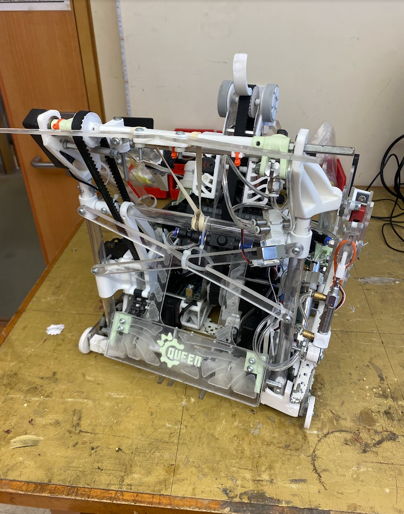
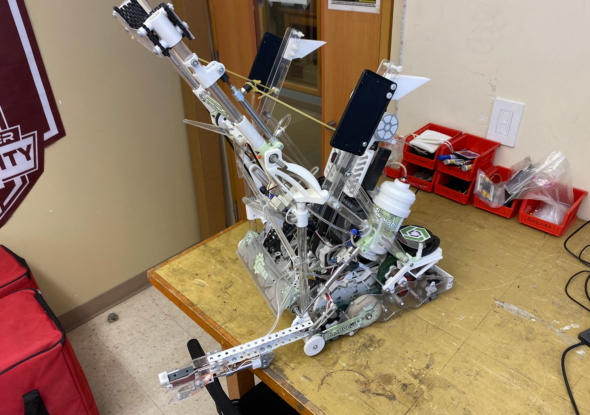
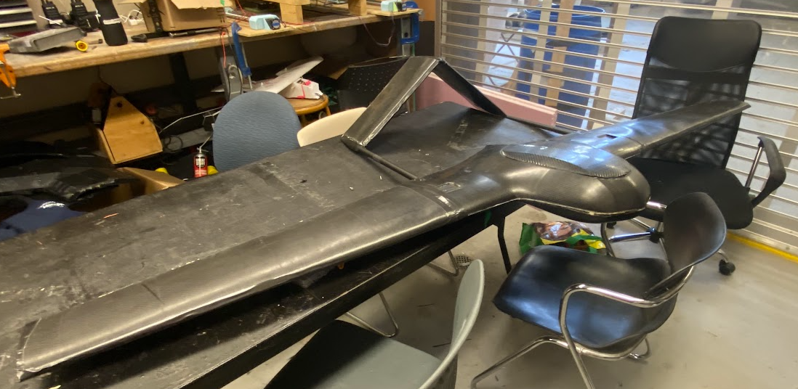
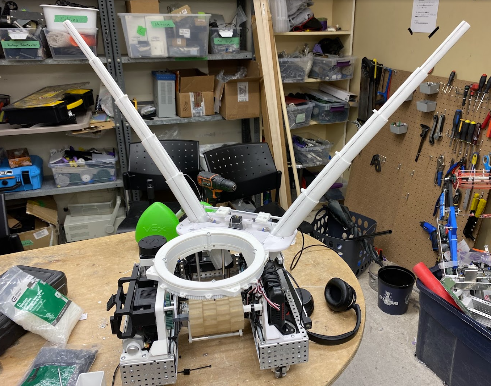
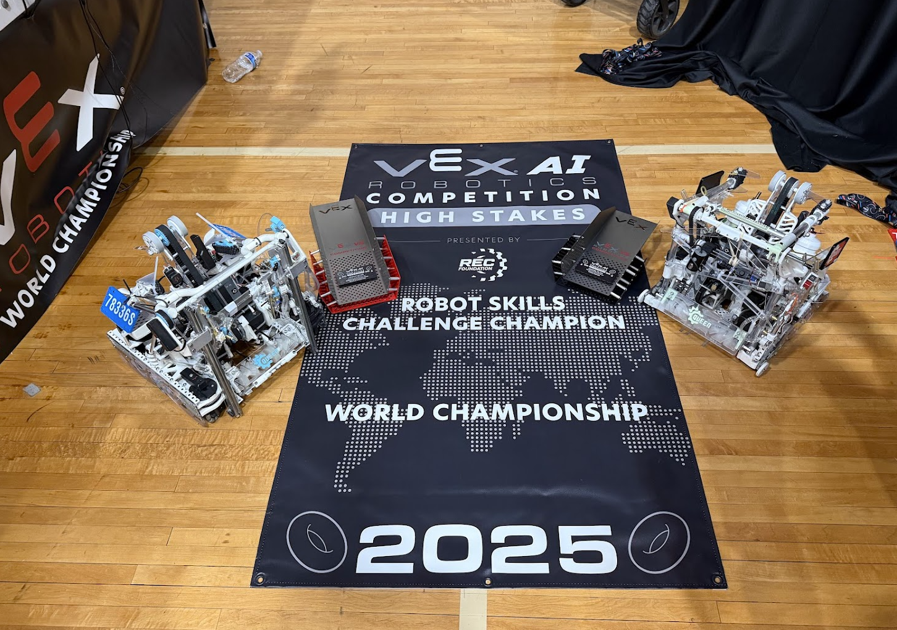
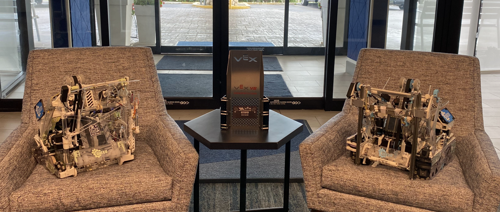
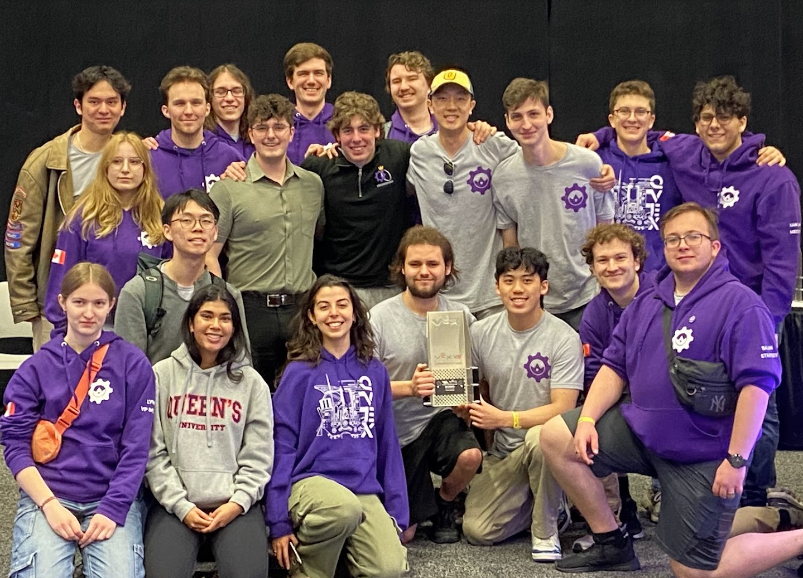

About Me
Hello! I'm Michael Cassidy, a Mechatronics and Robotics Engineering student at Queen's University (Schulich Leader Scholar, GPA: 3.83). I am passionate about mechanical design, robotics, and software engineering, and I am actively seeking internship opportunities to further develop my skills and contribute to innovative projects.
Experience
-
Director of Aeromechanics, Queen's Aerospace Design Team (2025-Present)
- Lead 20-person subteam for mechanical design and construction of fixed-wing aircraft for AIAA competition.
- CAD modeling, structural analysis, manufacturing, aerodynamic modeling, and carbon fibre layups.
-
President of Technical Operations, Queen's VEXU Robotics Team (2022-2025)
- Led 80+ person technical team across mechanical, electrical, and software.
- Mechanical development of four robots, won VEX AI Skills World Champion and Build Award.
- Modeled/integrated designs, applied kinematic/dynamic analysis, rapid prototyping, and mentored team members.
-
Software Engineer Intern, Teranet (Summers of 2023-2025)
- Led development of 12 Java REST APIs, reducing request times by over a minute for key operations.
- Developed integrated applications, cutting response times by 100ms across all requests.
- Standardized design practices, improved codebase maintainability and team collaboration.
- Recognized as a top-performing intern, highest co-op rating.
-
Robotics & Programming Instructor, RoboEDU (2019-2023)
- Taught robotics/programming to 300+ students, ages 4-16.
- Coached competitive robotics teams, focusing on design, programming, and teamwork.
- Developed lesson plans and projects for practical robotics engineering skills.
-
Research Assistant, Queen's University (July 2021 - August 2021)
- Worked with Prof. Robin Dawes to develop a system to streamline finding related study resources for students.
- Researched and developed natural language processing algorithms to compare curriculum documents and sort them by subject matter.
- Achieved a 99.6% success rate in classifying documents by course combining different data analytics techniques.
Skills
- Software: SolidWorks, OnShape, OpenVSP, FEA, Python, MATLAB, C++, Rust, Java, Excel
- Manufacturing: 3D Printing, Moulding, CNC Machining, Carbon Fibre Layups, Hand/Power Tools
- Programming: Python, C++, Java, Rust, MATLAB, Git, Docker, Linux
- Systems: REST APIs, Spring, Apache Camel, CI/CD (Jenkins, OpenShift), Robotics Control
Projects
Fixed-Wing Aircraft Design (2023-2024)
Led the mechanical design and manufacturing of a fixed-wing aircraft for the AIAA competition, including aerodynamic modeling, carbon fibre layups, and structural analysis.


2025 Robot Assembly (2024-2025)
Designed and built a competitive robot for the VEXU World Championship, focusing on advanced mechanical systems, CAD modeling, and rapid prototyping. Led a team through the full engineering cycle from concept to competition.
 Stringray Reconstruction Project (2023)
Manufactured a Stringray drone using advanced carbon fibre layups and custom 3D-printed molds. Contributed to the reconstruction and fabrication process, ensuring structural integrity and lightweight design.
Odom Board PCB Design (2023)
Designed a custom odometry PCB for robotics applications, featuring high-precision sensor integration and compact layout for reliable position tracking.

2024 VEXU Swerve Drive Robot (2023-2024)
Developed and built a swerve drive robot for the 2024 VEXU season, featuring custom swerve modules and advanced motion control. Integrated mechanical, electrical, and software systems for high-performance competition.

Achievements & Competitions
- VEX AI Skills World Champion (2024) – Led the team to win the world championship in AI robotics skills.
 - VEXU Build Award (2024) – Recognized for outstanding robot design and construction.
  - Schulich Leader Scholar (2021-Present) – Awarded prestigious scholarship for STEM leadership and academic excellence.
- AIAA Design-Build-Fly Competition (2024) – Designed and manufactured a fixed-wing aircraft for international competition.
- Queen's University Dean's List (2021-2024) – Consistent academic achievement in engineering.
Contact
Email: michael@shoichet.com
LinkedIn: michael-cassidy-8263a6251
GitHub: Michael-Lancebotics